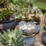

-

多肉入新家
多肉必须经过一段时间适应期，也就是安全度过缓苗期，就说明她入盆成功，真正进入新家了。首先我们需要晾根、修根、再晾根。把刚入手的多肉放在阴凉通风处晾1-2天，这样那些失去生命力的老根、腐根用手轻轻一捋就掉了，根系如果不清理干净，会影响她吸收水肥，也会蔓延到健康根系影响生长。修理干净后在阴凉处再晾1-2天就可以入盆了。
2018-07-15王亚楠645
-

-

花在冬日
初雪悄然而至，洋洋洒洒飘了数日，难得天空放晴，这些花儿最让人心心念念了！冬日的花房比起其他季节并没有逊色，反而多了一丝暖意与新意！鲜花工作室向他人展示的不仅是花卉本身的价值，更多的花艺工作者更愿意把自身对鲜花的理念，对美的追求，对惬意生活的感受与大家分享！
2018-01-08王亚楠211
-

最适合教师节的迷你花束
在诸多的传统节日中，教师节是一个既令人肃然起敬又饱含慈爱深情的节日。自古以来就有“一日为师终身为父”的深刻思想流传，这不仅仅是因为教师这个神圣的岗位为祖国培养了无数栋梁之才，最重要的是作为启蒙者教育后人做人的道理，让一代又一代国人继承着善良、谦和、恭敬等优秀传统品德。所以教师这一职业一直享有“桃李满天下"的美誉。
2018-09-18王亚楠213
-

秋如黑天鹅般优雅的到来
伴着街头偶尔飘落的黄叶，和着萧瑟的凉风划过脸颊的不忍，秋正如镜头中低吟的黑天鹅般优雅的到来，不声不响，悄然而至，很喜欢她的低调、她的优雅。初秋是一个需要被温暖的季节，恰巧有一些可人的花儿就是这样应景般出现。扶郎花，又名非洲菊、太阳花，就是那么恬静柔美的花儿，很符合秋的气质，秋的模样。
2018-09-06王亚楠85
-

那些配材花的点睛之笔
在花艺作品的制作中一般都有三个板块融合穿插而成，她们分工明确而又密切合作，她们承认重点花材不可替代的核心地位，也尊重所谓配材花的衬托力量以及末级中心勾勒轮廓的枝叶。今天我们来欣赏那些配材花的魅力带给我们视觉的享受。市场上常见的配材花有满天星、水晶草、红豆、夕雾草、星辰花、须苞石竹，还有品种繁多的小菊，如孔雀菊（孔雀紫苑）、木春菊（木茼蒿）、绿小菊等。
2018-08-14王亚楠102
-

适合家庭的摆台花
经常会有人来咨询哪些花卉适宜家庭摆台花，既能彰显花的婀娜多姿、楚楚动人，又便于养护，上班族回到家中看到闻到这些花儿能缓解疲劳，带来享受的乐趣。小编在养花的过程中愿意和花友们分享一点建议。在众多的鲜切花中，比较适合家庭摆台花的有百合、玫瑰、康乃馨（香石竹）等。百合从颜色上可以分为白百合、粉百合、黄百合，当然她们每种颜色还会有好多分类与学名。大家耳熟能详的在市场上常见的有白色香水百合、金黄的黄天霸百合等。
2018-07-15王亚楠599
-

绿萝的养护
对于花友而言，绿萝可能是养在家中的第一盆绿植。她的新叶是夏日峰回路转的一簇簇清凉，而且大家似乎都看到了它净化空气的能力非常强。最主要的原因是现今我们素馨花卉出售的绿萝便宜又好养，备受人们的青睐与喜爱。花友养绿萝常见的问题大概有三个：1、浇水不当。绿萝是喜欢湿润土壤的植物，当盆内水分不够的时候，绿萝就会出现叶子发黄、枯萎变蔫的现象。
2018-07-13王亚楠80
- 上一页 1 2 3 下一页